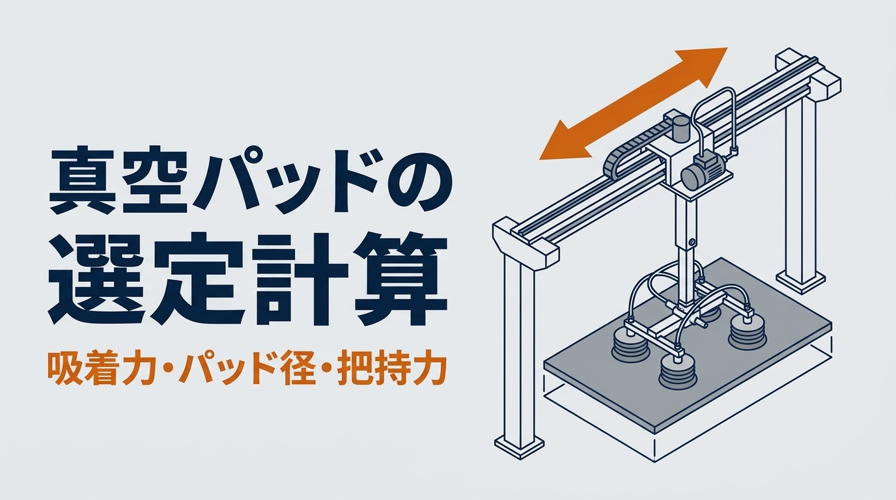

ロボットや搬送装置のハンドで、真空パッドの大きさを「前の装置と同じφ20」「なんとなく4個」で決めていないでしょうか。本記事では、真空パッドの選定計算を、計算例つきで解説します。運び方から必要な吸着力を求め、パッドの大きさと数を決めます。同じワークを、爪で挟むハンドで運ぶ場合の把持力の求め方も扱います。
ポイントは、同じ5kgのワークでも、運び方と表面の状態で、必要な力が何倍も変わることです。後半には、条件を入れてパッドの大きさや把持力を試せる計算ツールと、パッドを選んで鋼板を落とさずに運ぶゲームがあります。数値はすべて説明用の例で、一般論にとどまる値には「要確認」と記しています。
計算例の適用範囲
- 本記事は、平らなワークを真空パッドで吸う場合と、爪で挟む場合の、基本的な選定の計算を説明するものです。選定の可否を保証するものではありません
- 計算で出るのは理論の値です。表面の状態、漏れ、摩擦、ワークの変形で、実際に保てる力は下がります
- 摩擦係数と安全率は、真空機器メーカーの技術資料にある参考値の例で、メーカーによって指針が違います。実際の選定では、使うパッドとハンドのカタログ、メーカーの選定ツールで確かめ、実機で吸着や把持の試験をしてください
- 真空が届くまでの時間、漏れ、パッドの寿命、ロボットの可搬重量と許容モーメントは、必要に応じて別に確かめてください
この記事でわかること
- 真空パッドの吸着力の求め方と、パッドの大きさの決め方
- 吸い方と動かし方（3通り）で変わる、必要な吸着力の式
- ロボットが急に止まるときと、エアが止まったときの考え方
- 爪で挟むハンドの把持力の求め方
- パッドの大きさや把持力を試せる計算ツールと、真空パッド選びゲーム
真空パッドの選定の流れ
真空パッドは、次の4つの順で選びます。最初に決めるのは、パッドではなく「どう吸って、どう動かすか」です。ここが決まらないと、必要な力の式が決まりません。
この章のまとめ
- 選定は、吸い方と動かし方 → 必要な吸着力 → パッドの大きさと数 → 配置と止まり方の確認の順
- パッドより先に、運び方を決める
真空パッドの吸着力の求め方
真空パッドがワークを引き付ける力は、パッドの内側と外の気圧の差に、パッドの面積を掛けたものです。真空の強さは、大気圧からどれだけ下げたか（ゲージ圧）で表し、「-60kPa」のようにマイナスを付けて書きます。計算では、差の大きさとして、マイナスをとった数字を使います。
パッド1個の吸着力 F ＝ P × A × 0.1
F：吸着力（N）、P：真空の強さ（kPa、マイナスをとった値）、A：パッドの面積（cm²）
例：-60kPa、φ20（3.14cm²）なら 60 × 3.14 × 0.1 ＝ 18.8 N
0.1は、kPaとcm²の単位をそろえるための係数です。60kPaの差は、1cm²あたり6Nの力になります。この式で出るのは、ワークが動かないときの理論上の力で、運ぶときの加速や、表面の状態はまだ入っていません。
| パッドの直径 | 面積 | 吸着力（-60kPa） |
|---|---|---|
| φ16 | 2.01 cm² | 12.1 N |
| φ20 | 3.14 cm² | 18.8 N |
| φ25 | 4.91 cm² | 29.5 N |
| φ32 | 8.04 cm² | 48.3 N |
| φ40 | 12.57 cm² | 75.4 N |
| φ50 | 19.63 cm² | 117.8 N |
直径が2倍になると、面積と吸着力は4倍になります。表は直径をそのまま使った値です。実際のパッドは、形や縁の作りによって吸う面積が直径より小さいことがあるので、メーカーが示す「有効吸着面積」を使います（カタログで確かめる）。カタログにある理論の吸着力は、安全率を含まない値です。
真空の強さも、決めて入れる値です。真空を作る機器の能力と、ワークとパッドのすき間からの漏れで、実際に出る強さが決まります。計算には、何も吸っていないときの最大の値ではなく、ワークを吸って運んでいる間に保てる強さを使います。本記事では、計算例として-60kPaを使います（仮の値・要確認）。段ボールのように空気を通すワークでは、真空が十分に上がらないことがあります。
この章のまとめ
- パッド1個の吸着力 ＝ 真空の強さ（kPa）× 面積（cm²）× 0.1
- 直径が2倍で、吸着力は4倍
- 面積は有効吸着面積、真空の強さは運んでいる間に保てる値を使う
必要な吸着力｜吸い方と動かし方で式が変わる
運ぶときに必要な吸着力は、吸い方と動かし方で3通りに分かれます。真空機器メーカーの技術資料では、次の形の式がよく使われています。
① 上から吸い、上下に動かす Fth ＝ m ×（g ＋ a）× S
② 上から吸い、横に運ぶ Fth ＝ m ×（g ＋ a ÷ μ）× S
③ パッドの面が縦向き（重さがパッドの面に沿ってかかる） Fth ＝（m ÷ μ）×（g ＋ a）× S
Fth：必要な吸着力（全部のパッドの合計、N）、m：質量（kg）、g：9.81、a：加速度（m/s²）、μ：パッドとワークの摩擦係数、S：安全率
②では、横向きの加速の力を、パッドとワークの間の摩擦で引き留めます。摩擦の力は吸着力×μなので、加速の分を μ で割ることになります。μ が0.5なら加速の分は2倍、0.1なら10倍です。横に運ぶときは、表面がすべりやすいほど、必要な吸着力が大きくなるということです。
これらは、メーカーが示す簡単な形の式です。持ち上げてから横に運び、向きを変えて置く、という一連の動きでは、それぞれの区間で式を当てはめ、いちばん厳しい条件で計算します。回転や急な停止が重なる場合は、ワークを傾ける力（モーメント）も考えます。
| 項目 | 目安の例 | 出どころ |
|---|---|---|
| 摩擦係数 μ | 油が付いている 0.1（参考値は0.1〜0.3）、湿っている 0.2〜0.3、乾いた金属・ガラスなど 0.5、乾いた粗い表面 0.6 | 真空機器メーカーの技術資料の参考値 |
| 安全率 S | なめらかで空気を通さないワーク 1.5以上、空気を通す・落ちると危ない・加速度や摩擦が分からない 2以上、旋回や反転など回す力がかかる動き 2.5以上 | ある真空機器メーカーの選定の指針の例 |
摩擦係数は計算の初めに使う参考の値で、材質だけからは決まりません。油や水、表面の粗さ、パッドの材質や形で変わるので、実際のワークで確かめます。分からないときは、小さめの値を使い、採用するメーカーの指針に従って安全率を大きくします（要確認）。
安全率も、メーカーの選定方法とセットで決まっています。表の値とは別に、独自の計算方法で「水平に吊るなら4以上、垂直に吊るなら8以上」とするメーカーもあります。どちらかが誤りなのではなく、計算の仕方が違うためです。使う製品のカタログと取扱説明書の指針に従い、カタログの「安全率を含んだ値」と混ぜて、二重に掛けたり掛け忘れたりしないようにします。
計算例：5kgの鋼板を、上から吸って横に運ぶ
500×400×3.2mmの鋼板（約5.0kg）を、上から4個のパッドで吸い、加速度5m/s²（約0.5G）で横に運びます。表面は乾いた金属（μ0.5）、真空は-60kPaとします。落ちると危なく、加速度も正確には分からないので、安全率は2とします。
Fth ＝ 5.0 ×（9.81 ＋ 5 ÷ 0.5）× 2 ＝ 198 N
パッド1個 ＝ 198 ÷ 4 ＝ 49.5 N
必要な面積 ＝ 49.5 ÷（0.1 × 60）＝ 8.25 cm² → 直径 32.4 mm
φ32：48.3 N → 足りない
φ40：75.4 N → φ40 を4個（必要な力は吸着力の66％）
計算では直径32.4mmで、φ32の吸着力は1個あたり1.2Nだけ足りません。計算値より大きいサイズを選ぶのが基本です。この66％は、安全率2を掛けた必要な力と、パッドの吸着力の合計の比です。安全率を掛ける前の力は約99Nで、吸着力の約33％です。
表面が湿っている・油が付いていると
同じ鋼板が湿っている（μ0.25）と、必要な吸着力は298Nになり、φ40を4個では吸着力の99％です。計算上はほぼ限界で、真空の強さや摩擦が少しでも下がれば足りなくなるので、パッドを大きくするか数を増やします。油が付いている（μ0.1）と598Nで、φ40では足りず、φ63を4個（必要な力は吸着力の80％）まで大きくなります。乾いた状態の約3倍です。
油が付くワークでは、パッドを大きくするより先に、吸う向きを①に近づける（横に動かす前に、ゆっくり加速する）、すべりにくい材質や形のパッドに変える、といった方法も考えます。
「重さの4倍」の目安と比べる
メーカーによっては、上から吸って水平に吊る場合に、ワークの重さの4倍の吸着力を確保する（安全率4）ことを目安にしている資料もあります。5kgの鋼板なら49×4＝196Nで、上の計算例（198N）とほぼ同じです。ただし、これはこの例の質量、加速度、摩擦係数、安全率の組み合わせで近い値になっただけで、別の条件でも4倍で足りるという意味ではありません。表面がすべりやすいときや、急な加減速があるときは、4倍では足りないことがあるので、式で確かめます。
この章のまとめ
- 必要な吸着力は、吸い方と動かし方の3通りで式が変わる
- 横に運ぶときは、加速の分を摩擦係数で割る。すべりやすい表面ほど大きな力が要る
- 計算値より大きいサイズを選ぶ。油が付くと、必要な力は約3倍になる
ロボットが急に止まるとき、エアが止まったとき
運ぶときの加速度は、ふだんの動きだけでなく、止まり方でも決まります。非常停止では、ふだんより短い時間で止まるので、加速度が大きくなります。「ロボット架台の強度計算」では、手先の速さ2.0m/sを0.2秒で止める仮定で、加速度を10m/s²としました（仮の値・要確認）。
非常停止（a ＝ 10 m/s²） Fth ＝ 5.0 ×（9.81 ＋ 10 ÷ 0.5）× 2 ＝ 298 N
φ40を4個（302 N）の 99％
ふだんの動きでは66％でも、非常停止では99％で、計算上はほぼ限界です。真空の強さ、摩擦、パッドごとの負担に少しでもばらつきがあれば足りなくなるので、この結果から「φ40で足りる」とは言えません。
また、この10m/s²は、一様に減速したと考えた平均の値です。実際の非常停止では、減速の強さが途中で変わり、瞬間の値は平均より大きいことがあります。止まり方は、機種、載せている重さ、重心、姿勢でも変わります。ロボットメーカーの停止の特性を確かめ、いちばん厳しい条件で計算します。落ちると危ないワークは、止まり方まで含めて計算することが大切です。
エアや電源が止まったときの落下を考える
工場のエアで真空を作る機器（エジェクタ）は、エアが止まると真空を作れなくなります。真空がすぐに抜けるか、しばらく保たれるかは、回路の作り、漏れ、弁やタンクの有無で変わります。保たれることを確かめていない限り、落ちる前提で安全を考えます。落ちると危ないワークでは、次のような対策を組み合わせます（要確認）。
- 真空の強さを測るスイッチで、必要な強さに届いてから動かす。スイッチの値だけで確実に吸い付いたと言えるかは、回路とパッドの配置に合わせて確かめる
- 運んでいる間も真空を見張り、下がったときの止め方と逃がし方を決めておく
- 弁やタンクで真空を保つ場合は、漏れがいちばん多い条件で、保てる時間を確かめる
- 落下を防ぐガイドは、重さ、衝撃、ハンドの動きを考えて設計する。ガイドでワークを押し上げないようにし、ガイドがあるだけで安全とは考えない
- 落ちる範囲に人が入らないようにし、人の上をワークが通る動きを避ける。リスクアセスメントで確かめる
この章のまとめ
- 非常停止では加速度が大きくなる。計算例では、66％が99％（ほぼ限界）になった
- 止まるときの加速度は平均の値だけでなく、ロボットメーカーの停止の特性で確かめる
- 真空が保たれると確かめていない限り、落ちる前提で対策を組み合わせる
爪で挟むハンドの把持力の求め方
平らな面が取れないワークや、掴んだ後に正確な位置へ入れるワークは、爪で挟むハンドを使います。挟むハンドでは、爪がワークを押す力と、爪とワークの間の摩擦で、重さと加速の力を支えます。
爪1本あたりの押す力 F ＝ m ×（g ＋ a）× S ÷（μ × n）
μ：爪とワークの摩擦係数、n：ワークに触れて摩擦を生む爪の本数
この式は、どの爪も同じ力で押し、摩擦係数も同じと仮定して、摩擦だけで支えるモデルです。爪の形でワークの段や穴を受ける場合は、その形と強さを別に確かめます。
同じ5kgの鋼のワークを、2本の爪で挟み、加速度5m/s²で持ち上げる場合を考えます。爪とワークの摩擦係数は、乾いた鋼どうしとして0.2と仮定します（仮の値・要確認）。
F ＝ 5.0 ×（9.81 ＋ 5）× 2 ÷（0.2 × 2）＝ 370 N（ワークの重さ49Nの約7.5倍）
非常停止（a ＝ 10）なら 495 N（約10倍）
油が付いている（μ0.1）なら 740 N（約15倍）
油が付いていて、非常停止もある（μ0.1、a ＝ 10）なら 991 N（約20倍）
爪の数を3本にすると、最初の条件で247N（約5倍）に下がります。ただし、ワークの形や寸法のばらつき、触れる位置によって、3本の負担が均等にならないことがあります。同じ5kgのワークでも、必要な押す力は条件しだいで重さの約5倍から20倍まで変わります。現場で同時に起こりうる条件（油と非常停止など）は、組み合わせて計算します。
ワークの重さの10〜20倍程度を目安として示す技術資料もありますが、一律の基準ではありません。摩擦係数、加速度、爪の数、掴む姿勢で必要な力は変わるので、式で計算し、使うハンドの仕様で確かめます。爪の表面に溝を付けたり、ワークの形に合わせて受ける形にしたりすると、摩擦だけに頼らずに済みます。
ハンドのカタログの「把持力」は、爪1本あたりの力のことも、全部の爪の合計のこともあります。また、取り付け面から掴む点までの距離が長いほど、把持力は小さくなるのが一般的です。カタログの把持力の定義と、掴む点の距離、爪の張り出し、爪の剛性、許容モーメントの条件を確かめます（カタログで確かめる）。空気で動くハンドは、中のピストンの力で爪を押すので、考え方は「エアシリンダの選定計算」と同じです。
ハンドの重さは、ロボットの可搬重量に入る
ロボットの可搬重量には、ワークだけでなく、ハンド、パッド、真空を作る機器、取り付けの金具の重さも入ります。パッドを大きく、多くするとハンドが重くなり、運べるワークが減ります。重心がフランジから遠いと、可搬重量に収まっていても、手首にかかるモーメントが許容値を上回ることがあります。ロボットメーカーが示す負荷の質量、重心の位置、慣性モーメント、許容モーメントの条件を、ワークを含めた全体で確かめます。加減速や反転のときの力、ケーブルやエアホースに引っ張られる力も見込みます。
この章のまとめ
- 爪1本の押す力 ＝ 質量×（g＋a）×安全率÷（摩擦係数×爪の本数）
- 計算例では、条件しだいでワークの重さの約5〜20倍。「10〜20倍」は一律の基準ではない
- 同時に起こりうる条件は組み合わせて計算する
- カタログの把持力の定義を確かめる。ハンドの重さと重心は、ロボットの条件で確かめる
自分の条件で試す｜真空パッドと把持力の計算ツール（概算）
ワークの質量、加速度、表面の状態を入れ、吸い方とパッドの数を選ぶと、必要なパッドの大きさが出ます。「ハンドの爪で挟む」に切り替えると、必要な把持力が出ます。初期値は、本記事の計算例と同じです。
真空パッドの大きさと、ハンドの把持力
真空機器メーカーの技術資料にある式で、必要な吸着力とパッドの大きさ、ハンドで挟むときの把持力を概算します。パッドの吸着力は「真空の強さ×パッドの面積」で、パッドの直径をそのまま面積に使っています。実際のパッドは、カタログの有効吸着面積で確かめてください。真空の強さは、ワークを吸って運んでいる間に保てる値を入れます。摩擦係数は技術資料にある参考値で、表面の状態で大きく変わります。安全率は、使うメーカーの選定の指針に従ってください。非常停止は、平均の値ではなく、ロボットの停止の特性で確かめた加速度を入れます。把持力は「爪1本あたりの押す力」で計算しています。カタログの把持力が爪1本あたりか合計かを確かめてください。パッドの配置とワークのたわみ、漏れ、真空が届くまでの時間、ハンドの重さとロボットの可搬重量は別に確かめてください。結果は選定の可否を保証するものではありません。実際の選定では、メーカーのカタログと選定ツールで確かめ、実機で吸着や把持の試験をしてください。
吸い方と動かし方
ワークの表面（摩擦係数の目安）
爪の本数
爪とワークの摩擦係数（仮の値）
条件
結果
| 必要な吸着力（安全率込み、全部のパッドの合計） | N |
|---|---|
| パッド1個に必要な吸着力 | N |
| 計算で求めたパッドの直径 | mm 以上 |
| おすすめのパッドの直径 |
| ワークの重さ | N |
|---|---|
| 爪1本あたりに必要な押す力（安全率込み） | N |
| ワークの重さとの比 | 倍 |
実際の設備での計算・選定の確認は、オンラインでお引き受けします（全国対応）。料金の目安相談する ›
やってみよう｜落とさず運べ！真空パッド選びゲーム
ハンドで鋼板を上から吸い、左の台から右の台へ横に運びます。鋼板の重さと大きさ、表面の状態（乾いている・湿っている・油が付いている）、ハンドの動きの速さは、毎回変わります。ときどき、運んでいる途中で非常停止がかかります。選べるのは、パッドの大きさと数の2つです。小さすぎると途中で落ち、大きすぎると鋼板からはみ出して空気が漏れます。
真空パッド選びゲーム
鋼板 kg（ mm）、表面 、加速度 m/s²
パッドの大きさ（直径）
パッドの数
判定は、本記事の計算ツールと同じ「② 上から吸って横に運ぶ」の式（真空の強さ -60kPa、安全率2）で求めた必要な吸着力の、パッドの吸着力の合計に対する割合で決めています。非常停止がかかる回は、止まるときの加速度 10m/s² で判定します。ゲームなので、110％までは成功とし、30％未満は「大きすぎ」としています。パッドは、直径の1.3倍の間隔で並べ、鋼板の面に収まらないと空気が漏れる、としています。落ち方や空気の音は、分かりやすくするための演出です。
パッドの形と材質の選び方
大きさが決まったら、ワークに合わせて形と材質を選びます。
- 平らな形：板や箱のように、平らでなめらかな面に向きます。吸い付いたときに位置がずれにくい形です
- じゃばら（ベローズ）の形：曲がった面、傾いた面、高さが少しばらつくワークに向きます。じゃばらが縮む分、ワークの位置は少し動きます
- スポンジの形：表面に凹凸があるワークに向きます。空気を通すワークでは、漏れの分を見込んで真空を作る機器を選びます
材質は、油への強さ、温度、吸った跡の残りにくさ、静電気への対策で選びます。塗装した面や鏡のような面では、吸った跡が残らない材質かを、メーカーの資料と試験で確かめます（要確認）。
真空パッドの選定でよくある失敗
横に運ぶのに、上下に動かす式で計算する
①の式（m×（g＋a））で計算すると、計算例では必要な力は148Nで、φ32で足ります。実際は横に運ぶので②の198Nが必要で、φ32では足りません。動かし方に合った式を使います。
パッドを大きくしすぎて、ワークからはみ出す
パッドがワークの縁からはみ出すと、すき間から空気が漏れて吸い付きません。パッドの面積はワークの面より大きくせず、数を増やして力を分けます。
パッドの配置が偏っている
真空パッドは、ワークを傾ける向きの力（モーメント）に弱いとされています。重心から離れたところだけを吸うと、パッドごとの負担が偏り、運ぶ途中でワークが傾いて、縁から剥がれることがあります。重心を囲むように配置し、薄い板ではたわみも確かめます。
吸い付く前に動かし始める
真空が必要な強さに届くまでには時間がかかります。配管が長い、細い、ワークから空気が漏れる、といった場合は特に遅くなります。真空の強さを測るスイッチで吸い付いたことを確かめてから動かし、その時間をサイクルタイムに入れます。
この章のまとめ
- 動かし方に合った式を使う
- パッドはワークからはみ出さない大きさで、重心を囲むように並べる
- 吸い付いたことを確かめてから動かす
真空パッドの選定で記録に残す項目
- ワークの質量、寸法、表面の状態（油、水、凹凸、空気を通すか）
- 吸い方と動かし方、ふだんの加速度と、止まるときの加速度
- 摩擦係数と安全率、その根拠
- 真空の強さと、真空を作る機器
- パッドの大きさ、数、配置、有効吸着面積
- 吸着の確認の方法、エアや電源が止まったときの落下対策
- ハンドの重さと重心、ロボットの可搬重量と許容モーメント
真空パッドの選定でよくある質問
真空を強くすれば、パッドは小さくできますか
計算上は、真空の強さに比例して吸着力が大きくなります。乾いた鋼板を加速度5m/s²で横に運ぶ計算例の条件に限れば、-80kPaならφ32（1個64.3N）で足ります。ただし、湿った表面や非常停止では1個74.5Nが必要で、φ32では足りません。また、真空を強くするには、機器の能力とエアの量が要り、漏れがあると届きません。薄いワークでは、強い真空で変形することもあります。パッドを小さくするために真空を上げるより、-60kPa前後で計算し、パッドの大きさと数で余裕を持たせる方が扱いやすいことが多いです（要確認）。
吸うハンドと挟むハンドは、どちらがよいですか
平らでなめらかな面が、毎回同じ向きで取れるなら、吸うハンドは爪の設計が要らず、立ち上げが速い方式です。面が取れない、形がばらつく、掴んだ後に正確な位置へ入れる、といった場合は挟むハンドが向きます。本記事の式で、両方の必要な力を出して比べてみてください。
まとめ
真空パッドの選定は、吸い方と動かし方を決め、必要な吸着力を求めて、パッドの大きさと数を決めるのが基本です。パッド1個の吸着力は「真空の強さ×面積×0.1」で、計算値より大きいサイズを選びます。
そのうえで、表面の状態と止まり方で、必要な力は何倍も変わることを確かめます。爪で挟むハンドも、摩擦で支えるという点は同じです。最終的には、パッドの配置、漏れと真空が届くまでの時間、エアが止まったときの落下対策、ハンドの重さまで確かめ、実機で試験をします。まずは計算ツールとゲームで、パッドの大きさと数の組み合わせを試してみてください。
参考
・真空機器メーカーの技術資料（真空パッドの選定の手順、搬送の向きごとの式、摩擦係数と安全率の目安、吸着力の表）
・ハンド（グリッパ）メーカーの技術資料（把持力の考え方と目安）
・力と摩擦の式は、一般的な力学の式